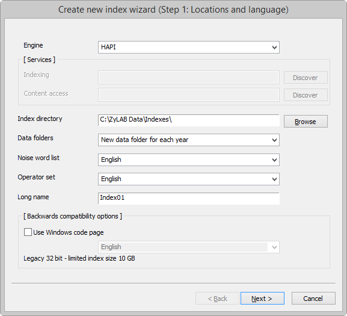
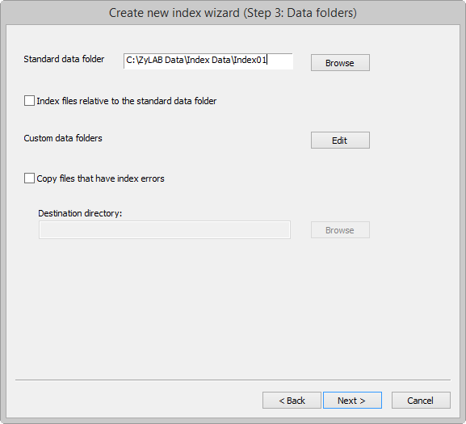
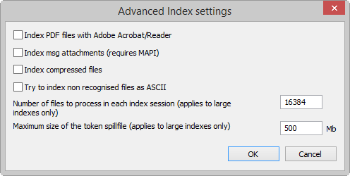
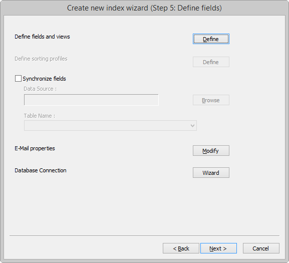
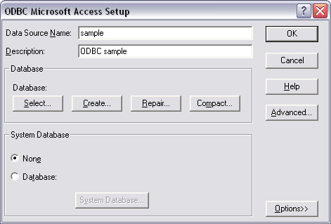
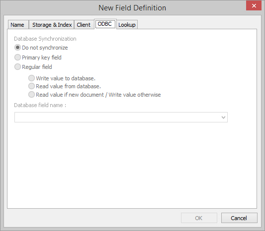
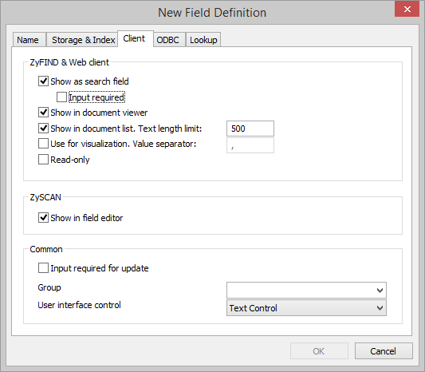
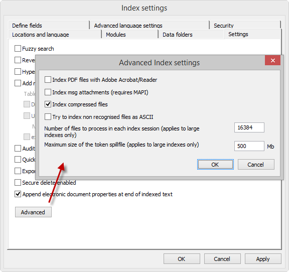
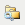
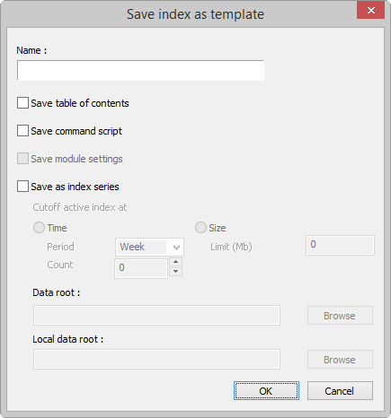

Make your documents accessible, by archiving them. Archive your documents, using ZyINDEX and ZySCAN.
During archiving, your documents are formatted (prepared for full-text retrieval). This allows you to search and find your documents.
When preparing documents for full-text retrieval, follow the steps below:
Conditions
ZyINDEX is open.
Instructions
Result
You have created a standard index.
Important
Once saved, the short Short index name cannot be changed!
To change the Long Index Name, see Change the Long Index Name
ZyINDEX is open.
Step 1: Locations and language (page 17) of the Index Wizard appears.
You are creating an advanced index. Step 1 (Locations and language) of the Index Wizard is open.

- The Index can only be in one language.
- The Index size is limited to 10GB.
It is recommended not to use this option.
You have completed step 1. Step 2 (Modules) of the Index Wizard appears.
You are creating an advanced index. Step 2 (Modules) of the Index Wizard is open.

You have completed step 2. Step 3 (Data folders) appears.
The XML Wrapper allows you to add fields to electronic documents of any format. For more information, see the ZySCAN manual > Add fields to electronic documents.
You are creating an advanced index. Step 3 (Data folders) of the Index Wizard is open.

Data folders are the (TXT, TIFF, Electronic and XML) folders where the scanned, imported or electronic data is stored. These folders are automatically created each time an index is built. Place the data on a shared network drive if you want the data to be accessible for different users.
If you want to be able to easily move your data collection (without indexing it again), select the checkbox 'Index files relative to the standard data folder'. Via Index Settings > Data folders you can define a new standard data folder location. Related files do not need to be updated, which saves you time.
Note: If the standard data folder is changed, the XML index must inherit the same settings. Do this by opening the main index in ZyINDEX and closing it without building it.
or
- Drag and drop individual files from Windows Explorer to one of the tabs (it is not important which tab). The files are automatically placed in the correct folder (Text, Tiff and Other).
- Open a specific tab, and drag and drop a folder from Windows Explorer to that tab. Only the files permitted in that tab are added; other files types in the folder are NOT added to the other tabs; you must add the folder to those tabs if you want to index the folder's files.
You have completed step 3. Step 4 (Settings) appears.
You are creating an advanced index. Step 4 (Settings) of the Index Wizard is open.
Choose between settings. You can choose from:
Fuzzy search (recommended)
Allows you to execute fuzzy searches after indexing.
Reverse search (recommended)
Allows you to execute searches with wild cards at the beginning of your search query after indexing.
Hyperlinks (recommended)
Allows you to create hyperlinks between (parts of) documents after indexing (in ZyFIND).
Add new documents to the Table of Contents
All new documents will be placed in a "New" folder in the Table of Contents. You can define a name for the Table of Contents folder for new documents.
Audit
Allows you to keep track of user actions.
Quick build enabled (recommended)
Allows you to use Quick build when building the index. Only files that are marked new, changed or deleted are indexed.
Export electronic document properties to xml wrapper
During indexing, document properties of any new or modified electronic document that can be extracted will be copied into an XML wrapper if an XML wrapper field definition is found with a matching field ID (start delimiter without brackets).
Note: Whenever the index is erased and indexed this process will be repeated, therefore it is advised to define these fields as read only fields.
Secure delete enabled
The 'Secure delete enabled' option allows you to safely sweep files from your hard disk when they are deleted. With this option selected, files will be shredded (or 'scrubbed' according to the DoD 5220.22-M standard) so they cannot be undeleted.
Append electronic document properties at end of indexed text (recommended)
Extracts the document properties and adds them to the end of the indexed text so a search will also include these properties.
If you want to index (large) indexes which may cause problems (for example with corrupt files or unrecognizable file formats), select the Advanced button.

You are creating an advanced index. Step 5 (Define fields) of the Index Wizard is open.


A field name may not contain spaces. Spaces are automatically replaced with an underscore.
Use the Id (delimiter) to define a search query. Query syntax:
<delimiter> to "/<delimiter>" {}
For example:
name to "/name" {john} will return all documents with the value john in the name field
name to "/name" {*} will return all documents with values in the name field
name to "/name" {} will return all documents with empty values in the name field

For information on Additional options, see the Note below.
You have completed step 5. Step 6 (Security) appears.
For more information about adding fields/values, see the ZySCAN manual > Add fields.
The Primary field (Storage & Index tab) is related to ODBC synchronization. The Primary field checkbox is disabled when an existing field definition is being edited. The option is only enabled for new field definitions, which is to protect the user from promoting an existing field to a primary key while duplicate values might exist in the repository. This issue would introduce a corrupt primary key and cause unpredictable behavior.
Obtain as document property from electronic file (Storage & Index tab) means that in case you give in the same field definition as the document properties in this electronic file the content of this file will be put in the files of ZyFIELD.
Add new documents to TOC folder specified in field value (Storage & Index tab) means that all new documents with this field definition will be put in an upfront created folder with this field definition in the table of contents. If you want to use this option, make sure that the index setting "add new documents to the Table of Contents" is selected (see Step 4: Settings (page 23)).
Database synchronization can be used in advanced installations to synchronize key fields of documents in a ZyINDEX archive and field information in a database. Database synchronization has been implemented to enable the import and export of document field values from and to a table in a database that supports ODBC (see ZyLAB Information Management Platform > Glossary).
The record in a table of the database can be linked to the ZyINDEX document by selecting a primary keyfield in the field definitions of the index. Depending on the value of the primary keyfield in the document the correct record is selected in the database table from which other field values may be read and put in a document field, or alternatively to which an existing field value may be saved. This exchange of field values is called synchronization.
Note that synchronization only occurs when ZyINDEX is indexing the index for either new files or files that have changed. No synchronization will occur for database records that have changed while the document has remained unchanged.
To make sure that the values of the linked fields match, we advise using barcodes that correspond with the documents during scanning. Recognizing the barcodes during scanning is very reliable and it is easy to print barcodes from a database.
The procedure to process the documents has to be the following:
Enter the information for the document in the database. Print a Barcode containing the value of the primary key field on a label and stick the label on the first page of the document. Alternatively you may print the barcode on a white page that can be used as a front page and as a patch page when scanning the paper documents.
Scan the document.
Build the index. Now the key field info is copied from the database to the corresponding document.
When the document information within the database changes the key field information within the document will be automatically updated during the next index update.
The following steps implement this operation:
Create a (system) data source (DSN) in the control panel of your system for the database (e.g. Access database) that you want to synchronize fields with. It is recommended to make a system data source because a user data source can only be used on the machine where it is created and is only visible to the one who created it.
In WIN2000 you have to add the type of database via Control panel > Administrative tools > Data sources (ODBC) > tab System DSN, and add to choose the right type of database. In Windows NT the Data sources (ODBC) can be found right under the control panel.
Below is an example for an ODBC set-up for Microsoft Access. A name and description for the coupling have to be made. With Database > select, one can connect with a database.

Now we have made a connection to the database via a data source. If we hook this data source up to an index the database and ZyINDEX are connected to each other.
First an index has to be made. In order to get the fields synchronized check the synchronize fields box and select the appropriate DSN (the data source you just created) and the table of the database you want to synchronize with. This function can be found in step 5 of the Index Wizard (Create an advanced index (page 16)).
Note: You can only select one table in the data source per index.
Select Define Fields and views to define a field and specify (in the ODBC tab of the New Field Definition dialog) whether it should be synchronized with the data source of the index. Note that this section of a field definition is not enabled if no data source is selected.

At least one field should be selected as primary keyfield that links the ZyINDEX document to a unique record in the database so that other fields may either be written to or read from the database at indexing time. The other fields have to be synchronized by selecting regular fields.
In order to synchronize the fields from the database and ZyINDEX the name of the field in the database must be entered in the 'Database field name' field in the ODBC tab of the New Field Definition dialog. In case there are fields in the database or in ZyINDEX that you don’t want to synchronize choose do not synchronize.
The indexing process triggers the synchronization. Only if a document is changed, its fields will be synchronized with a record in the database that matches the primary keyfield. Synchronization will store all fields that are write-type to the database and will read all fields that are read-type.
Working in this manner will save you a lot of time typing all this data from the database into the fields of ZyINDEX.

ZyINDEX > Build > Define Fields > Define > Add definition > Client tab
The option 'Use for visualization' enables you to refine your search results by filtering on the content of the field (see Refine Your Results). For the Single-select list field, the Multi-select list field and the Logical field, 'Use for visualization' is a default option.
Once the 'Use for visualization' checkbox is selected, you can define the Value separator (the default value is a comma). The defined delimiter will be used for dynamic filtering (Refine your Results), including the Star Tree and Tree Map. It is recommended to use punctuation characters. If the value separator is empty, the field value will not be split. A value separator can include, start or end with one or more space characters.
When editing fields, still a comma will be used to split or combine field values.
In eDiscovery the Value separator is particularly useful. For example, in Microsoft Outlook fields with email addresses are split with a semicolon (;). These fields should be linked to a ZyINDEX field with a semicolon as the Value separator.
You want to connect a ZyLAB index to a database to access/manage data stored in that database. With the Database Settings Wizard you will be able to define all the settings needed to establish a connection between ZyINDEX and the database.
Fields are listed in the Fields.txt file of the index, which can be found at \\ZyLAB Data\Indexes\[index name]\FIELDS

You have created an index. Also, you defined the database settings and created an ado.xml file that will create a link between the ZyLAB index and the database.
Run this wizard during the creation of an index. The connection can only be made if the Database Fields module has just been added. If you want to create a new connection (to another database or other fields), the module must be removed and added again. Then, you need to run the wizard again to create the connection.
When ZyLAB Analytics Server is installed (part of ZyLAB Analytics Bundle) you can analyze single documents opened in ZyVIEW using ZyLAB Analytics Server (see ZyFIND > Working With Documents > Analyze with ZyLAB Analytics Server.
When you want to use the Analysis Dialog button in ZyView (see ZyFIND > Working With Documents > Analyze with ZyLAB Analytics Server) you must use the Database Settings Wizard (page 36) to link your index to a database with a specific fields scenario.
You have created an index from which documents can be analyzed directly in ZyView using ZyLAB Analytics Server.
You are creating an advanced index. Step 6 (Security) of the Index Wizard is open.

To change the settings of the roles, go to ZyINDEX > Security.
You have completed step 6. The index is created. Use this index to store your data (Build the index (page 60)).
The Forensic Investigation index template allows users to index information more quickly as some of the search functions for the indexed data are disabled. Search options such as fuzzy search and reverse search are disabled, which will increase the indexing speed. PDF files are indexed using the standard filters and not with Adobe Reader (Acrobat). The Unicode version of this index template allows larger sets of indexed files and uses Unicode, allowing you to index different character sets in one index.
The settings shown below are for an index created with the Forensic Investigation template. As you can see, only two options are selected.
The option 'Index compressed files' in Advanced Index Settings allows you to index documents of compressed (ZIP) files. Password protected ZIP files cannot be indexed, but will be logged.

A taxonomy enables you to classify and manage your documents, based on hierarchical structures. An existing taxonomy may be linked to a ZyINDEX index, ensuring faster and more precise access to relevant information. The classification values will be part of the document, stored as field values belonging to the field Taxonomy. This enables dynamic structuring of information, which saves storage space and enhances search capabilities.
You created a Taxonomy index, added documents and (taxonomy) field values. Now, you can search the index. Either in ZyFIND > Fields, or via a Web Client.
It is possible to extract document properties, file system, concept, language and/or field information from documents while indexing. This information is added as Xmlfields (C:\Program Files\ZyLAB\Index Data\'Short Index Name'\XmlFields).
Concepts are (complex) search statements with a name. For example, the concept 'Legal' may be defined as 'lawyer OR justice OR rechtsanwald OR advocaat OR court'. So, you will extract information (and place it in fields) based on queries.
Document properties is information attached to a document with meta information. For example, 'Last Saved By', 'Word Count', 'Status'.
File system is information defining a document on the system. For example, 'File name' or 'Date created'.
Field Extractor extracts information from documents based on a start and end delimiter. The delimiters can be anything.
Only document properties that are defined in the documents and listed (Document Comment, Keyword, Last Saved By, Author, Subject, Title, Abstract, Account, Address, Attachments, Authorization, Backup Date, Bill To, Blind Copy, Carbon Copy, Category, Checked By, Client, Completed Date, Character Count, Page Count, Word Count, Creation Date, Department, Destination, Disposition, Division, Document Type, Minutes Edited, Editor, Forward To, Group, Language, Last Print Date, Mail Stop, Matter, Office, Operator, Owner, Project, Publisher, Purpose, Received From, Recorded By, Recorded Date, Reference, Revision Date, Revision Notes, Revision Number, Secondary Author, Section, Security, Source, Status, Typist, Version Date, Version Notes, Base File Location and Version Number) are extracted.
XML and HTML files must be indexed using the indexing format ANSI-Nowrap instead of AutoSenseINSO. Otherwise, the delimiters in the files will not be indexed and therefore cannot be used to extract field information.
Select the custom data folders icon . In the ZySCAN Text Files tab, select the *.xml folder, and double click in the right hand pane on Format. Select from the dropdown listbox the ANSI NoWrap value, and click OK.
You defined a HAPI index with XML Wrapper and defined the data you want to extract while indexing.
Now, you can add documents to your index, and build it. Remember to select the option 'Extract data' before clicking GO.
You have created a HAPI index with XML Wrapper, and selected Concept as the Data Extractor.
If the selected field is a list field (with a number of defined list field values), it is possible to generate a concept entry for each list field value. This means that several searches can be executed which will be placed in the selected field.
You can create as many concepts to a XML concepts file as you like.
For example, value "John Doe" is added to the field Suspect if the query "John Doe OR John Dune OR Joe Doe OR Joe Dune" was successful.
You can add as many concept entries to a concept as you like.
You have created a new Concept file.
You have created a HAPI index with XML Wrapper and key fields, and selected Field Extractor as the Data Extractor.
If you want to add more fields, repeat step 4 to 11.
If you want to edit/delete a field, select the correct field and click the appropriate button.
You have created a new Field Extractor file.
Using index templates saves time as all the fields and . You can create your own templates (based on existing indexes - see Create an index template (page 56)), or you can choose one of the following basic templates (see Create an index based on a template (page 58)).
Index Series templates are used to automatically create new indexes in the same series when the current index reaches a cutoff limit set by a time interval or the index size. The index series can later be searched as a single index. For the Index Series Template to function you must add the index to the Timer.

A new sub-folder is created in the index's data folder.
When the cutoff limit is reached a new sub-folder is created for the subsequent new index in the series.
The index is converted to a series template, and the Timer Service is activated to create new indexes in the series according to the cutoff rules.
ZyINDEX is open.
You have created an index template.
ZyINDEX in installed with some standard templates. These are:
Audit Trail database
Contains Audit Trail module, link to Audit Trail database, and all relevant fields (see About Audit Trail (page 190) for more details).
eDiscovery
Contains all fields necessary for storing document information necessary for the eDiscovery process.
Email Archive
Contains all fields necessary for storing information about emails and their attachments.
Exchange Connector
An index series based on Email Archive, and specific Exchange Connector fields.
Forensic Investigation
Legal Review
Contains all fields necessary for the legal review process.
Redaction
Contains a Redaction field (linked to Redaction.xml value file with Exemption codes) and XML Wrapper.
Taxonomy Field index
Contains an XML Wrapper and two XML Wrapper fields of the Taxonomy facet field type. Both fields are linked to a value file (see Taxonomy Field Index (page 47) for more details).
Workflow Archive
Workflow module, customized short description, and TOC view (see the ZyLAB Workflow manual for more details)
ZyINDEX is open.
You have created an index based on a template.